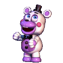

O primeiro jogo da franquia. Após os acontecimento da pizzaria de 1987 eles decidem re-inaugurar e precisam de um guarda noturno. Lançado em 8 de agosto de 2014, Five Nights at Freddy's é um jogo de survival horror indie que se passa na Pizzaria Freddy Fazbear. Você é um guarda noturno que tem a responsabilidade de vigiar o local durante a noite. Seu objetivo é sobreviver cinco noites sem ser pego pelos animatronics do jogo.
A gameplay de FNaF é bem simples, você deve sobreviver das 00:00 (12:00 AM) ás 06:00 (06:00 AM) sem ser pego pelos animatronics, podendo usar camêras de segurança, portas para se proteger e acender as luzes para encherga-los. Pois suas cameras tem pontos cegos e esses pontos cegos são á frente da sua porta.
Freddy, o animatronic principal, ele gosta de se movimentar pelo escuro, olhe as camêras para atrasar seu movimento, caso ele chegue no lado da sua sala olhe para ele com prioridade! Ele também pode te atacar quando a energia acabar, então mais um motivo para não deixar a energia acabar certo?

Bonnie, se move pelo lado esquerdo da pizzaria, ao velo na frente da sua porta, feche! Após ele sair abra a porta para não gastar energia. O bonnie foi o primeiro animatronic feito e ele causou pesadelos no Scott. Por ser um dos animatronics que mas aparece em fnaf 1 chamam ele de coelho carente. Bonnie pode desativar as cameras enquanto se move, se você demorar um tempo para fechar a porta quando ele aparecer, ele desativara a porta e as luzes.
Chica, igual o Bonnie chica se move pelo lado diereito da pizzaria, ao vela na frente da sua porta feche! após ela sair abra a porta para não gastar energia. Entre o grupo principal de animatronics, Chica foi a primeira a morrer no "MCI" ela pode ser encontrada em FNaF SL na noite 2. diferente de Bonnie a Chica não aparecera na porta com tanta frequencia porém ela fica la esperando para tirar sua energia, fora o seu comportamento nas cameras, ela sempre fica olhando para elas. Assim como Bonnie se você demorar um tempo para fechar a porta quando ele aparecer, ela ira desativar a porta e as luzes.

Foxy, ele fica na pirate cove (cam 1c) ele vai sair dela de pouco em pouco e caso ele saia ele correra até sua porta para te dar um jumpscare, para evitar que ele saia apenas abra a camera não é necessario olhar para a camera dele, e lembre-se toda vez que ele bate na sua porta ele rouba energia e quanto mais vezez ele bate mais energia ele tira.
Ele é um caso raro de acontecer porém raro não é impossivel, para sua sorte ou azar caso ele apareça abra e feche a camera se não ele fecha seu jogo!